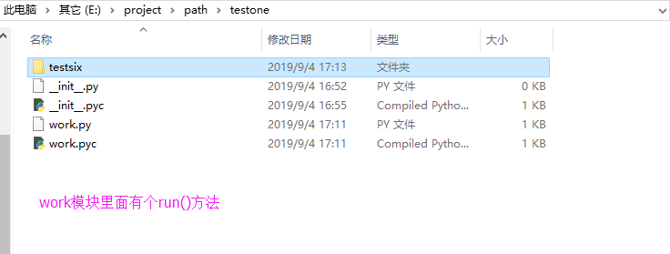
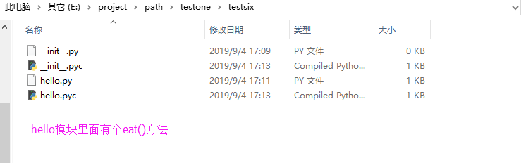

模块路径如下图：

import sys
sys.path.append(r"E:\project\path")
print "===>", sys.argv[0]
from testone import work
print work.run()
from testone.work import run
print run()
from testone.testsix import hello
print hello.eat()
from testone.testsix.hello import eat
print eat()
https://www.cnblogs.com/telazy/p/8967515.html
https://blog.csdn.net/weixin_41824719/article/details/81051743